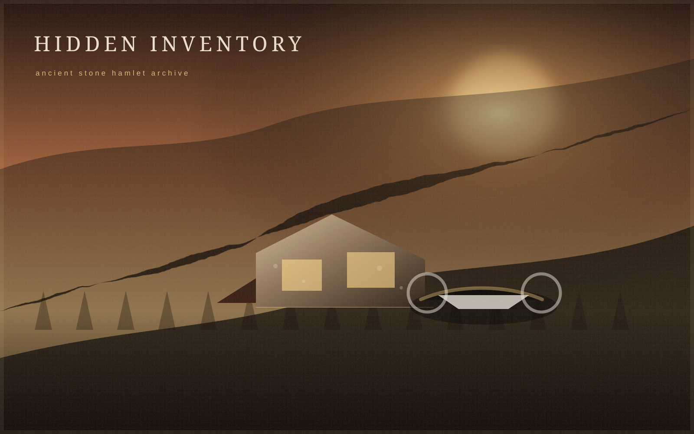
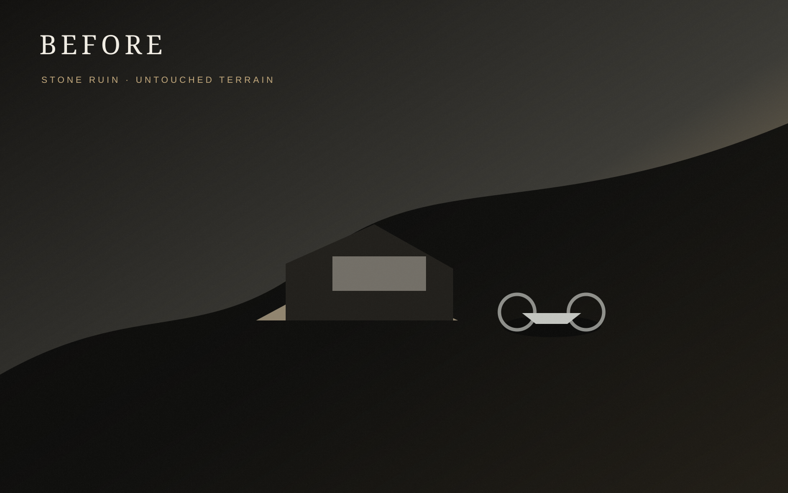
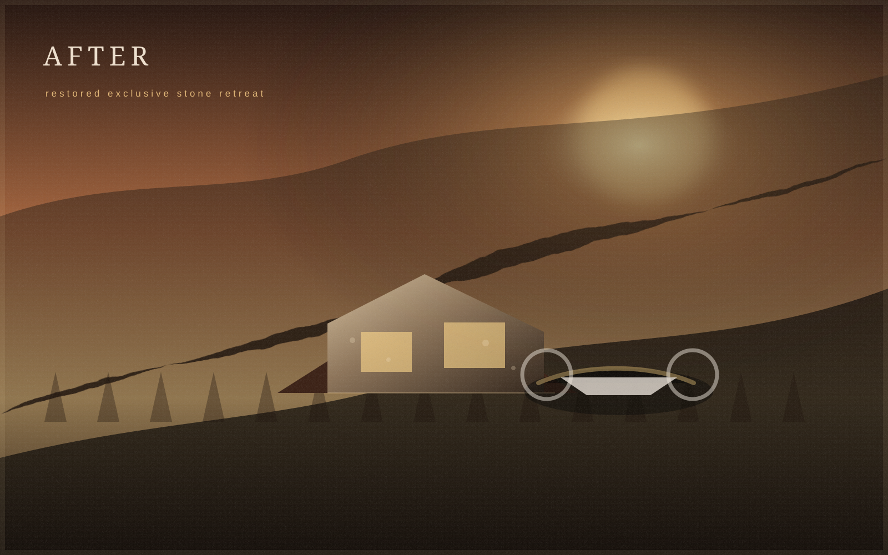
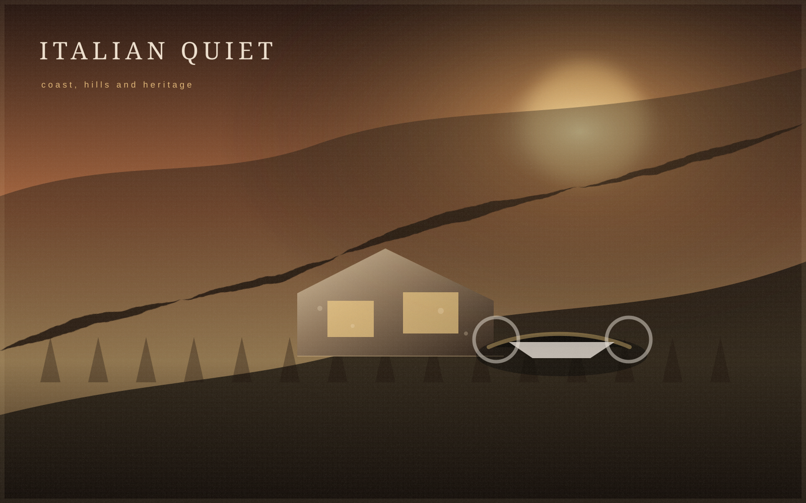

ALTIORA ESTATES
Luxury Beyond Roads.
We acquire and transform exceptional remote properties for the era of personal flight.
Manifesto
The future does not build new destinations. It unlocks forgotten ones.
For more than a century, roads defined real estate value. Personal air mobility may change that logic. Places once considered too remote can become private refuges of exceptional value — provided architecture, energy, access and regulation are treated with equal seriousness.
Own the Unreachable.
What was once unreachable becomes exclusive.
Silence is the new status.
The Hidden Inventory
A fragmented archive of stone, altitude and abandonment.
Italy contains a vast and fragmented hidden property inventory: ruderi, casali, abandoned hamlets, shelters, rural stone structures and unused mountain properties. Many occupy positions where new construction would be difficult or impossible to authorise today.

Working assumption only: references to tens of thousands of abandoned rural and mountain structures require validation during project development.
Before / After
Conservation first. Intervention second.
Original stone is preserved where technically feasible, then paired with large contemporary openings, minimal interiors, solar and storage, water collection, smart home systems and a discreet landing area subject to approvals.


The ALTIORA Estate
A property, an infrastructure and a private operating system.
Each estate is conceived as a complete luxury asset, not a listing: architecture, autonomy, privacy, systems, service and personal flight integration designed as one experience.

Personal Flight
Flight-access, without dependence on one aircraft.
Jetson ONE is one visible early example of an emerging category. ALTIORA is designed around the broader evolution of personal eVTOL and ultralight aircraft, with every package subject to legal, technical and environmental verification.
Aircraft availability varies by market; regulatory approval, pilot requirements and operating limitations depend on local legislation; landing infrastructure is subject to technical, environmental and planning approvals; no property or aircraft package is offered without prior legal and technical verification.
Flight Changes Value
Roads defined real estate for a century. Flight will define what comes next.
A remote estate can be perceived differently when transfer time is reduced. Illustrative scenario: 2 hours by mountain road, 18 minutes by personal flight, zero traffic, direct point-to-point access. Times are not guaranteed and depend on aircraft, weather, law and route.
Mountain road
2 hours illustrative
→Personal flight
18 minutes illustrative
Why Italy
Landscape density, cultural gravity and rare private locations.
Alps, Apennines, Ligurian ridges, rural Tuscany and inland territories create extraordinary diversity near coastlines, cities and heritage. Depopulation has left overlooked structures in places of enduring emotional value.

Business Model
From overlooked asset to flight-access luxury estate.
A disciplined sequence turns scarcity into a complete branded ownership experience.
Owners Club
More than ownership. A private ecosystem.
Aircraft support coordination, estate maintenance, concierge, transfers, chef and hospitality, security, housekeeping, seasonal preparation, experience planning, shared arrival hubs, technical assistance and rental management where applicable.
Featured concept estates
Three concepts. No addresses. No implied availability.
The following estates are architectural and investment concepts, not properties currently offered for sale.
Investment thesis
Scarcity-led repositioning, not volume development.
The thesis combines distressed or overlooked inventory, high-value repositioning, scarcity-driven luxury, emerging mobility, recurring service revenue, strong brand potential and first-mover positioning — without treating feasibility as automatic.
Responsibility and feasibility
Vision earns value only when it survives verification.
Every development requires urban planning due diligence, title checks, legal access, landscape constraints, environmental compatibility, authorisations, flight safety, meteorology, emergency infrastructure, acoustic impact and technical sustainability.
Private Access
Request a confidential introduction.
For estate acquisition, investment, partnerships, architecture and personal flight integration. Submissions are stored only when a contact endpoint is configured.